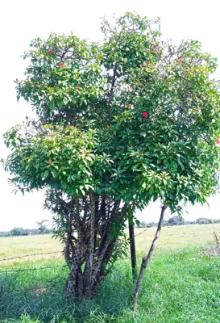

pranet · 出典付きの植物図鑑
レウエンベルゲリア・ブレオ
Leuenbergeria bleo (Kunth) Lodé · Cactaceae

レウエンベルゲリア・ブレオ は、サボテン科レウエンベルゲリア属の常緑広葉樹。主としてパナマからコロンビア西部に分布する。サボテン科ではあるが細い枝と明確な葉を備える。乾燥耐性が低く熱帯雨林気候に適応している。一見サボテンに見えないことが特徴だが、葉脇にはサボテン科特有の刺座と多数の刺がある。
出典: Wikipedia 日本語版「レウエンベルゲリア・ブレオ」 · CC BY-SA 4.0
異名: Cactus bleo Kunth, Peireskia cruenta K.Schum., Pereskia bleo (Kunth) DC., Pereskia corrugata Cutak, Pereskia cruenta Pfeiff., Pereskia panamensis F.A.C.Weber, Rhodocactus bleo (Kunth) F.M.Knuth, Rhodocactus corrugatus (Cutak) Backeb.
同定や利用は自己責任でお願いします。この図鑑だけを根拠に野生の植物を食べないでください。
出典
- 学名: World Flora Online Plant List 2026-06 · CC0 1.0
- 名前: Wikipedia の記事名と Wikidata · CC0 1.0（Wikidata）。記事名は事実
- 説明: Wikipedia 日本語版「レウエンベルゲリア・ブレオ」 · CC BY-SA 4.0
- 食用・毒性: World Checklist of Useful Plant Species (Diazgranados et al. 2020, RBG Kew) · CC BY 4.0
- 分布: World Checklist of Vascular Plants (WCVP), RBG Kew, version 2026-06-04 · CC BY 3.0
このページは pranet のデータから自動生成しています。コードは MIT、データは項目ごとのライセンス（説明）。